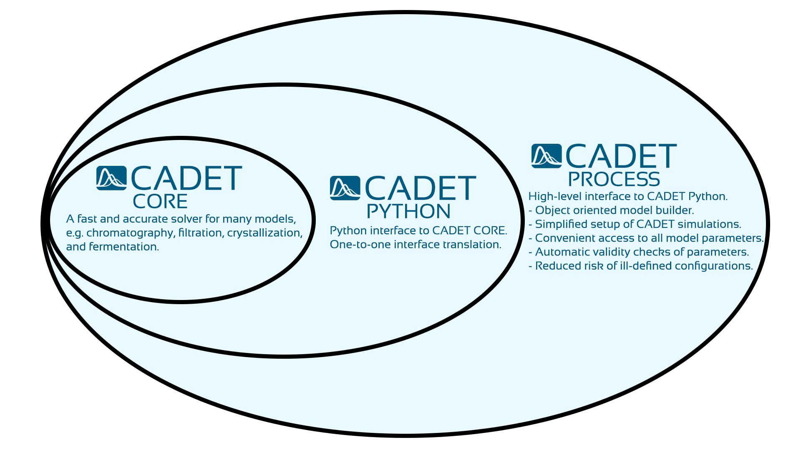

CADET-Core#
CADET is developed at the Institute of Bio- and Geosciences 1 (IBG-1) of Forschungszentrum Jülich (FZJ) under supervision of Prof. Eric von Lieres. The heart of the CADET software is CADET-Core, a fast and accurate solver for a comprehensive model family. Typical applications include (but are by far not limited to) chromatography, filtration, crystallization, and fermentation. CADET-Core can handle arbitrary sequences and networks of unit operations, including reactors, tanks, tubes, pumps, valves, detectors, etc. The resulting models are solved with state-of-the-art mathematical algorithms and scientific computing techniques.
Forum: https://forum.cadet-web.de
Source: cadet/cadet-core
To stay up to date on CADET news, development updates, and workshops, please subscribe to our Newsletter.
Features#
Fast and accurate solution of strongly coupled partial differential algebraic equations (PDAE)
Computation of parameter sensitivities with algorithmic differentiation (AD)
Shared memory parallelization using Intel TBB
Python interface
Support of HDF5 and XML data formats
Flexible and extensible through modular design
Works on Windows, Linux, and Mac OS X
CADET Platform#
CADET-Core is part of CADET, a collective platform of software repositories that provide tools for biotechnology process modeling. CADET-Core can be used as a standalone simulator by interfacing via HDF5 files. Alternatively, CADET-Python provides a wrapper around an HDF5 file reader and writer, simplifying model configuration. Furthermore, it is the interface for CADET-Process, an universal and user-friendly tool for biotechnology process modeling and evaluation.
For more information on the different packages of the CADET platform, see here.

Fig. 1 Relations between CADET-Core, CADET-Python, and CADET-Process.#
Installation#
CADET-Core can be installed via conda from the conda-forge channel.
conda install -c conda-forge cadet
This requires a working conda installation.
Optionally, use mamba which uses a faster dependency solver than conda.
mamba install -c conda-forge cadet
For more information on how to install and build CADET, see here.
Ongoing Development#
We do our best to provide you with a stable API. However, CADET-Core is actively developed and breaking changes can sometimes be unavoidable. For non-developers, it is recommended to upgrade from release to release instead of always working with the most recent commit.
Bugs#
Please report any bugs that you find here. Or, even better, fork the repository on GitHub and create a pull request (PR) with the fix.
Donations#
Donations for helping to host, maintain, and further develop the CADET-Core project are highly appreciated.
Citing#
The development of CADET-Core has been a collaborative effort, with multiple dedicated individuals contributing their expertise to create a powerful and versatile open-source software tool. Countless hours of hard work have been invested to provide the scientific community with a valuable resource. As an open-source project, CADET-Core relies on the support and recognition from users and researchers to thrive. Therefore, we kindly ask that any publications or projects leveraging the capabilities of CADET-Core acknowledge its creators and their contributions by citing an adequate selection of our publications.
General:
Leweke, S.; von Lieres, E.: Chromatography Analysis and Design Toolkit (CADET), Computers and Chemical Engineering 113 (2018), 274–294.
von Lieres, E.; Andersson, J.: A fast and accurate solver for the general rate model of column liquid chromatography, Computers and Chemical Engineering 34,8 (2010), 1180–1191.
Major extensions:
Breuer, J. M.; Leweke, S.; Schmölder, J.; Gassner, G.; von Lieres, E.: Spatial discontinuous Galerkin spectral element method for a family of chromatography models in CADET, Computers and Chemical Engineering 177 (2023), 108340.
Zhang, W.; Przybycien T., Breuer J. M. , Leweke S. , von Lieres E.: Solving crystallization/precipitation population balance models in CADET, part II: Size-based Smoluchowski coagulation and fragmentation equations in batch and continuous modes, Computers and Chemical Engineering 192 (2025), 108860.
Zhang, W.; Przybycien T., Schmölder J. , Leweke S. , von Lieres E.: Solving crystallization/precipitation population balance models in CADET, part I: Nucleation growth and growth rate dispersion in batch and continuous modes on nonuniform grids, Computers and Chemical Engineering 183 (2024), 108612.
Püttmann, A.; Schnittert, S.; Naumann, U.; von Lieres, E.: Fast and accurate parameter sensitivities for the general rate model of column liquid chromatography, Computers and Chemical Engineering 56 (2013), 46–57.
Additionally, to ensure reproducibility of your work, we recommend citing the zenodo doi corresponding to the specific CADET-Core release that you used.
For a comprehensive list and guidance on citing CADET-Core publications, please refer to the publications section of the documentation.
Acknowledgments#
Please refer to the list of authors and contributors who helped building and funding this project.